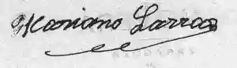
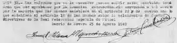
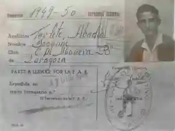
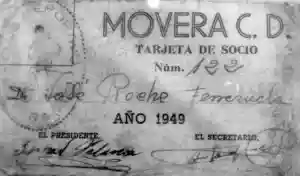
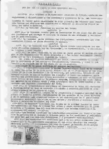
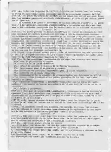
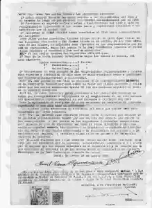

El 22 de Julio de 1.949, el alcalde de Movera D. Mariano Larraz se dirige, como es preceptivo, al Jefe Superior de Policía de Zaragoza para informarle del resultado de la reunión celebrada con el propósito de fundar un club de fútbol y lo hace en los siguientes términos:
Ilsmo Señor:
Haciendo uso de la concesión de permiso nº 7765 para celebrar una reunión deportiva celebrada el 22 del
corriente. Tengo el honor de comunicarle que se celebró en un ambiente amistoso y cordial, proponiendo la
directiva del C.D. Fútbol D. Pedro Bescós que fue aceptada unánimemente por todos los reunidos, quedando
constituida de la siguiente forma:
Lo que comunico a V.I. para su conocimiento y efectos.
Dios guarde a su Ilsmo muchos años.
Movera, 22 de Julio de 1.949
Mariano Larraz

El día 29 de Julio de 1.949 el Jefe Superior de Policía de Zaragoza remite al Gobernador Civil para su consideración.
El día 30 de Julio de 1.949 el Gobernador Civil de Zaragoza comunica al Alcalde de Movera:
La Jefatura Superior de Policía me remite un escrito de esa Alcaldía en el que se solicita la aprobación
de Junta Directiva de un denominado “Club de Fútbol D. Pedro Bescós”, sin que este Club exista legalmente,
por no haberse presentado por triplicado en este Gobierno Civil, los Estatutos o Reglamento, previamente
aprobados por la Federación Regional de Fútbol.
En consecuencia comunico a V. que la citada Sociedad es ilícita, de conformidad con lo dispuesto en el art.
172 del Código Penal, debiendo procederse a cumplir los requisitos exigidos por la vigente legislación de
asociaciones.
Dios guarde a V. muchos años.
Zaragoza, 30 de Julio de 1.949
El Gobernador Civil
Con fecha 25 de Agosto de 1.949 se presentan los Estatutos del Club y la Federación Aragonesa de Fútbol da el visto bueno el 9 de Septiembre de 1.949.

Estatutos del C.D. Movera firmados por Ismael Palanca, Alejandro Bescós y Antonio Trinchán
Ficha del jugador Joaquín Farlete Abadía, temporada 1949-1950:

Con el beneplácito de la Federación, los Estatutos se presentan en el Gobierno Civil, quien a su vez, con fecha 26 de Diciembre de 1.949, remite escrito al Jefe de la Comandancia de la Guardia Civil para que “se me informe, por medio de las fuerzas de su digno mando, acerca de las condiciones de moralidad pública y privada y adhesión al Régimen, de los vecinos de Movera que en la adjunta relación se indican, y que son propuestos para formar parte de la directiva del Club Deportivo Movera”.
En la reunión general del Club Deportivo celebrada el día 2 de Mayo de 1.950 se tomaron los siguientes acuerdos: aprobar las cuentas generales del club, elevar la cuota mínima de socio a seis pesetas y elegir nueva Junta directiva, cuyos nombres y cargos son:
El 17 de Mayo de 1.950 el Gobernador Civil da el visto bueno a la nueva Junta directiva.

Carnet de socio del aficionado José Roche Ferreruela
El 26 de Marzo de 1.953, el Gobierno Civil, por no haber presentado el Balance, impone al Club una multa de cincuenta pesetas que deberá hacer efectiva en el plazo de diez días, en el papel de pagos al Estado correspondiente.
Estatutos del Club a 25 de Agosto de 1.949:


